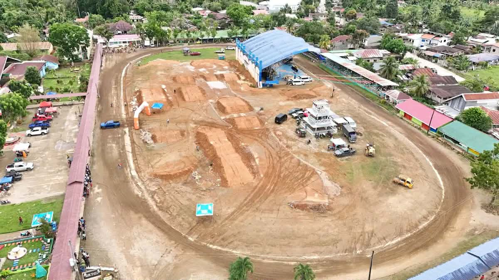
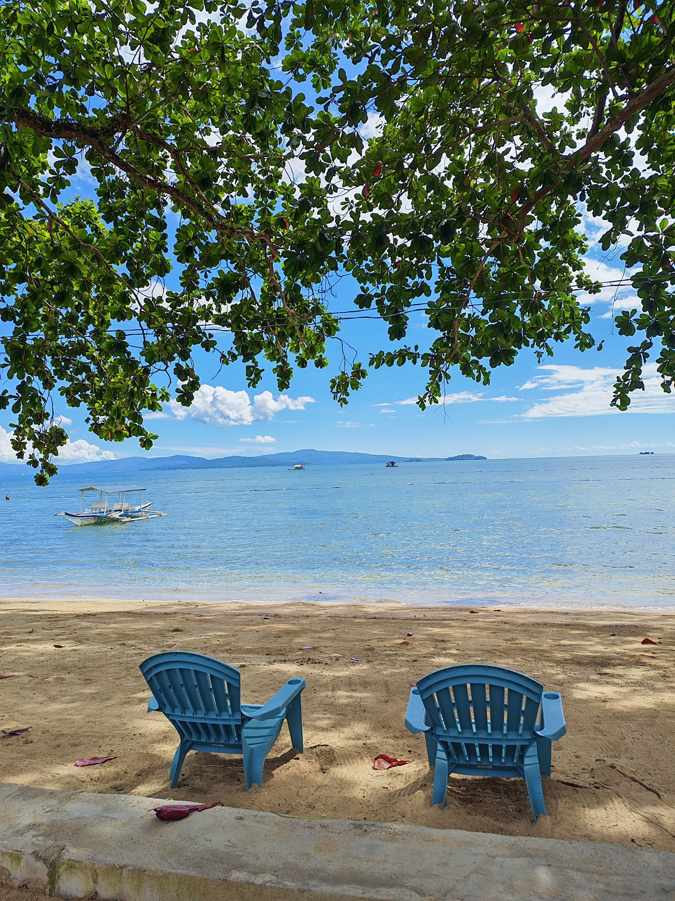
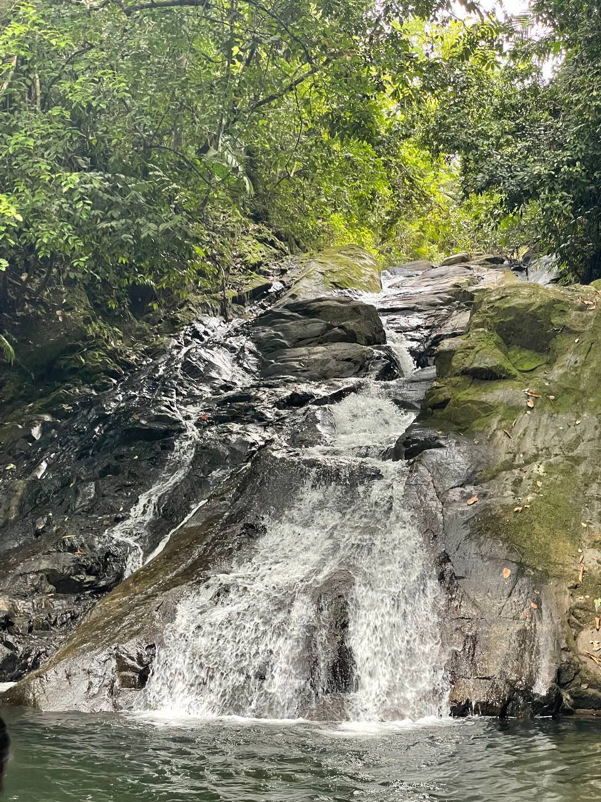

About Buug
Buug is a 3rd class municipality in the province of Zamboanga Sibugay, Philippines. Known for its rich cultural heritage and natural beauty, Buug serves as a commercial hub in the region.
Learn More27
Barangays
38,000+
Population
134 km²
Land Area
Explore Buug

Municipal Plaza
The heart of the municipality where locals gather for events and relaxation.

Coastal Areas
Beautiful beaches and coastal resources along Sibugay Bay.

Hidden Falls
Discover the natural waterfalls in the surrounding mountains.